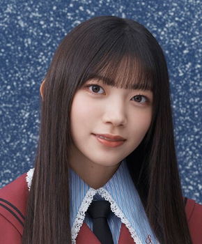
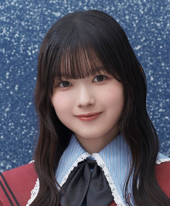

サカミチア
サカミチア僕は向いてないぼくはむいてない

初収録リリース「The growing up train」のジャケット
櫻坂46
発売日：2026-03-11
収録：The growing up train（14thSG）
種別：カップリング曲（全員）
センター：藤吉夏鈴
作曲：Ryo Ito、Sorato、suekiki、ペンギンス
編曲：Sorato
ライブ披露：1件
フォーメーション
上が後列、下が前列です。色付きがセンター。（公式発表に基づく）
 松本和子
松本和子 遠藤光莉
遠藤光莉 大沼晶保
大沼晶保 小田倉麗奈
小田倉麗奈 稲熊ひな
稲熊ひな 幸阪茉里乃
幸阪茉里乃 目黒陽色
目黒陽色 小島凪紗
小島凪紗 山田桃実
山田桃実 勝又春
勝又春 村山美羽
村山美羽 武元唯衣
武元唯衣 遠藤理子
遠藤理子 中川智尋
中川智尋 増本綺良
増本綺良 向井純葉
向井純葉
佐藤愛桜 松田里奈
松田里奈 守屋麗奈
守屋麗奈 山下瞳月
山下瞳月 谷口愛季
谷口愛季 大園玲
大園玲 山﨑天
山﨑天
山川宇衣 的野美青
的野美青 藤吉夏鈴
藤吉夏鈴 田村保乃
田村保乃浅井恋乃未
 森田ひかる
森田ひかる 村井優
村井優参加メンバー（32名）
遠藤光莉、大園玲、大沼晶保、幸阪茉里乃、武元唯衣、田村保乃、藤吉夏鈴、増本綺良、松田里奈、森田ひかる、守屋麗奈、山﨑天、石森璃花、遠藤理子、小田倉麗奈、小島凪紗、谷口愛季、中嶋優月、的野美青、向井純葉、村井優、村山美羽、山下瞳月、浅井恋乃未、稲熊ひな、勝又春、佐藤愛桜、中川智尋、松本和子、目黒陽色、山川宇衣、山田桃実
この曲が披露されたライブ（1件）
同じリリースの曲
The growing up train、光源、ドライフルーツ、キスが苦い、くらげらしく、Sunny side up、僕は向いてない